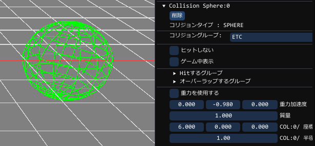
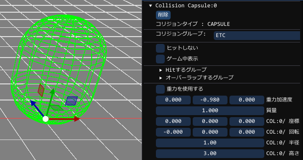
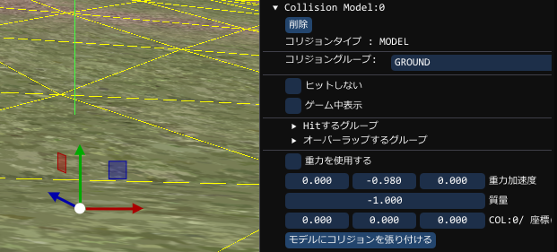
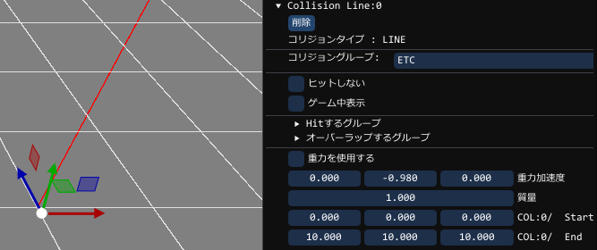
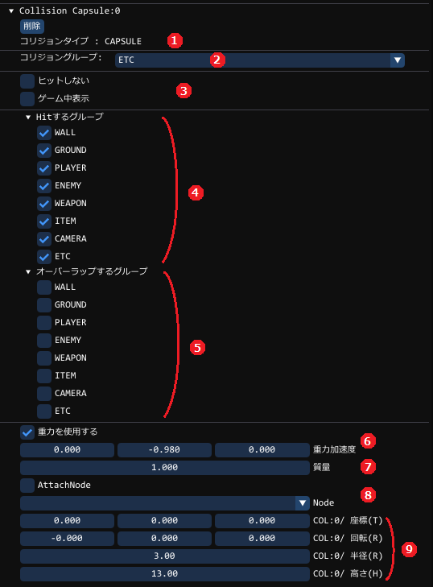
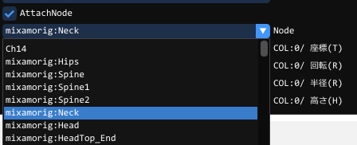

ComponentCollisionとは
コリジョンどうしの当たりを行い、お互いにめり込まないようにしたり、当たりを判定したりすることができます
現状のコリジョンコンポーネントには、次のタイプが存在しています。
| 球 (ComponentCollisionSphere) | 球状の当たり。中心からの距離で判定するため判定速度が速い |  |
|---|---|---|
| カプセル (ComponentCollisionCapsule) | カプセル状の当たり。基本縦にして使用し、プレイヤーや敵の胴体として使用できます |  |
| モデル形状 (ComponentCollisionModel) | 地形や障害物につけて上に乗ったりできる。モデル形状どうしは当たり判定はしていない |  |
| 線 (ComponentCollisionLine) | 銃などにつけて、弾丸などで当たる先のものをとらえるのに使える |  |
ComponentCollision系の共通の設定方法
例えば、当たり判定にて、Playerの剣には敵の胴体には当てたいが、カメラや、アイテムには当てたくない事や、ボスはプレイヤーから押し戻されたくないなど、
様々な状態が存在します。
このようなものは、Collisionに設定で可能となります。

| ① コリジョンタイプ | Sphere/Capsule/Model/Lineのタイプが現状存在します |
|---|---|
| ② コリジョングループ | 自分が所属するグループを示します。相手からこのグループをHit指定されないと当たりません |
| ③ デバッグ用項目 | |
| ヒットしない | 強制的に当たらないようにします。テストで当たりを外したいときに利用できます |
| ゲーム中表示 | リリースモード、デバッグ表示OFFの時もデバッグ表示されます |
| ④ Hitするグループ | 自分がヒットするグループを設定できます。自分の所属するグループとは関係ありません |
| ⑤ オーバーラップするグループ | 当たる当たりに当たっても内部まで入り込みます。押し当りを発生させたくない場合に使用します |
| ⑥ 重力に関する項目 | |
| 重力を使用する | 下に落ちるような動作をします。重力加速度で毎フレーム位置が更新されます |
| 重力加速度 | 重力加速度の大きさと方向を個別に決めれます |
| ⑦質量 | 質量(重さ)の大きさを示します。質量が小さいもので大きいものを動かすのは難しくなります |
| ⑧ モデル連動に関する動作項目 | |
| AttachNode | モデルに連動させるようにする |
| Node | 連動したいモデルのノードを指定できます |
| ⑨タイプ個別の内容 | ここはタイプ設定により内容が異なります |
コリジョン(球)をつける
auto collision = obj->AddComponent<ComponentCollisionSphere>();
上記のコリジョンに名前をつける (例はテストという名前となる)
collision->SetName(u8"テスト");
コリジョン(球)作成と同時に名前をつける (例はテストという名前となる)
auto collision = obj->AddComponent<ComponentCollisionSphere>()
->SetName(u8"テスト");
グループの設定
collision->SetCollisionGroup( ComponentCollision::CollisionGroup::PLAYER ); // 所属するグループを「PLAYER」とします
Hitグループの設定
「ヒットするグループ」の「ENEMY」「GROUND」「ITEM」をチェックする効果を与えますそれ以外はチェックを外します
// 当るグループは「ENEMY」「GROUND」「ITEM」とします
collision->SetHitCollisionGroup( (u32)ComponentCollision::CollisionGroup::ENEMY |
(u32)ComponentCollision::CollisionGroup::GROUND |
(u32)ComponentCollision::CollisionGroup::ITEM );
※グループの概念ですが、あくまでグループは、Aグループ、Bグループという感覚と変わりません。
ただ、ゲームを作る際に、A, B, C, Dなどより、PLAYER, ENEMY, GROUND, ITEM,
などとするほうが扱いやすいと感じるため、そのように設定しています
実際作成中に敵をGROUNDグループとすることも可能で、GROUNDグループ全体を敵として扱うことも可能ですが
それをすると後で見直したときに非常にわかりにくい状態となります。
よって、プレイヤーは、PLAYERグループ、敵は、ENEMYなどと設定するのが良いかと思われます。
オーバーラップする
オーバーラップにチェックするとそのタイプへの押しあたりの影響がなくなります。ただし、すり抜けるようになりますが、OnHitの当たり判定には来ます。
重力の設定
重力を使用する、をチェックするのと同じ効果を与えます
// Collisionの重力を有効にします
collision->UseGravity();
// Collisionの重力を無効にします
collision->UseGravity( false );
質量の設定
重さを与えます。他の当たりから押される場合に影響します
// Collisionの質量を10にします
float 質量 = 10.0f;
collision->SetMass( 質量 );
コリジョンをモデルに連動させる
// Collisionを「mixamorig::Neck」というノードに張り付ける
collision->AttachToModel( "mixamorig::Neck" );
// モデル連動を外す
collision->AttachToModel( -1 );

GUIで、上記のように設定したのと同義である
ComponentCollisionSphereの使用方法
コリジョンの作成
auto collision = obj->AddComponent<ComponentCollisionSphere>();
コリジョンのサイズを設定する
collision->SetRadius( 3.0f ); // 球コリジョンの半径を3.0 にする
ComponentCollisionCapsuleの使用方法
コリジョンの作成
auto collision = obj->AddComponent<ComponentCollisionCapsule>();
コリジョンの横半径を設定する
collision->SetRadius( 3.0f ); // コリジョンの半径を3.0 にする
コリジョンの横半径を設定する
collision->SetHeight( 5.0f ); // コリジョンの高さを5.0 にする
ComponentCollisionModelの使用方法
コリジョンの作成
auto collision = obj->AddComponent<ComponentCollisionModel>();
コリジョンの当たりに合わせる
collision->AttachToModel(); // コリジョンをモデルに合わせる
ComponentCollisionLineの使用方法
コリジョンの作成
auto collision = obj->AddComponent<ComponentCollisionLine>();
コリジョンの当たりに合わせる
float3 start = { 0, 0, 0 };
float3 start = { 0.0f, 0.0f, 100.0f };
collision->SetLine( start, end ); // Z軸方向にラインを飛ばす
コリジョンどうしの当たりの判定をおこなう方法
オブジェクトどうしで当たり判定を行うには、オブジェクトを継承する必要があります。
class TestObject : public Object
{
public:
BP_OBJECT_TYPE( TestObject, Object );
void OnHit( const ComponentCollision::HitInfo& hitInfo ) override
{
// ここに当たった時の処理を書きます
// 最後にこれを入れてください。ここでめり込みの解消を行っています。
__super::OnHit( hitInfo );
}
};
BP_OBJECT_IMPL( TestObject, u8"TestObject" );
Create時に、今まで使用していたObjectを上記のオブジェクトに変更します
継承したオブジェクトを作成する必要があります。
auto object = Screne::CreateObjectPtr< ObjectTest >()
また、OnHitで受け渡されるパラメータは以下のものが入っています。
| ComponentCollision::HitInfo | |
|---|---|
| hit_ | ヒットしたかどうか。OnHit()に来ている地点で当たっています。必ずtrueとなります。 |
| hit_collision_ | 当たった相手のコリジョンコンポーネント。ここから相手のコリジョン情報がもらえます。 |
| hit_position_ | 当たった相手のコリジョンと当たった位置。基本的に自分のコリジョンとの中間地点を示す。 |
| collision_ | 当たった自分のコリジョンコンポーネント。ここから自分のコリジョン情報がもらえます。 |
| hit_position_ | 当たった自分のコリジョンと当たった位置。基本的に相手のコリジョンとの中間地点を示す。 |
| push_ |
押し戻し量。ここを変化させることでめり込み量も変化させることができるが、 質量により計算された結果となるため、基本的には、システムに任せるほうが良い。 |
TIPS
// 相手のコリジョンについている名前を取得できます
auto enemy_col_name = hit_collision_->GetName();
// 自分のコリジョンについている名前を取得できます
auto my_col_name = collision_->GetName();
// 相手のコリジョンについている名前を取得できます
auto enemy_name = hit_collision_->GetOwner()->GetNameDefault();
// 自分の名前を取得できます
auto my_name = collision_->GetOwner()->GetNameDefault();